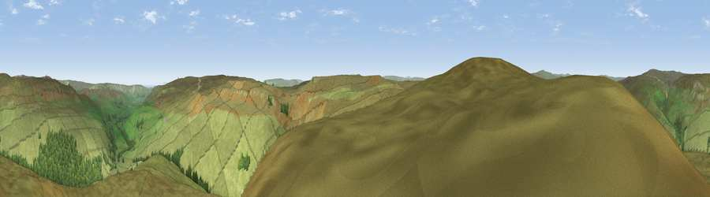

Viewpoint near Gunnerside
#11713 in England · top 28% of its area beats it · near GunnersideThe view, rendered

A 360° render of this exact spot computed from the terrain model, tree cover and land cover — summer colours, afternoon light, calibrated against photographs of famous viewpoints. Real trees, hedges and buildings will differ in detail.
The panorama
Grey silhouette: terrain skyline in each direction (720 bearings, Earth curvature and refraction included). Dashed green: skyline with trees (+15 m) and buildings (+8 m) as obstacles. Blue strip: how far the ground is visible on each bearing.
Where the view opens
Wedge length = distance to the farthest visible ground on that bearing (vegetation-aware). Rings at 10, 25 and 50 km.
What fills the view
94% grassland · 6% woodland
Angular shares of the visible panorama (visual magnitude), not map area. Landscape diversity 0.10 (0–1 Shannon).
Key numbers
More beautiful places nearby
The staircase of upgrades: each row has a higher view potential than everything closer. Driving times are estimates from straight-line distance, calibrated against real road routing — check an actual route before setting out.
| Place | Direction | Drive | Score |
|---|---|---|---|
| Viewpoint near Gunnerside | WSW · 3 km | ~8 min | 65.7 |
| Viewpoint near Gunnerside | N · 4 km | ~8 min | 66.5 |
| Viewpoint near Askrigg | SSE · 4 km | ~9 min | 69.9 |
| Viewpoint near Cotterdale | W · 8 km | ~16 min | 74.4 |
| Viewpoint near West Witton | SE · 13 km | ~25 min | 75.5 |
| Viewpoint c10024_7603 | WNW · 16 km | ~29 min | 76.9 |
| Viewpoint near Buckden | S · 17 km | ~30 min | 77.3 |
| Viewpoint near East Witton | ESE · 21 km | ~36 min | 77.8 |
54.36198, -2.06806 · source: screening · position refined by local search. Computed location — check access rights before visiting.